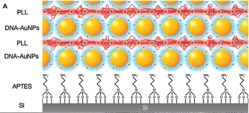
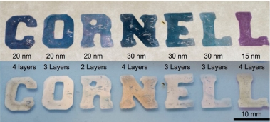

Plasmonic Multilayers based on DNA-coated gold nanoparticles
Gold nanoparticles coated with single-stranded DNA ligands have a
powerful dual functionality: The DNA ligands can be engineered with
highly specific end groups that selectively attach to DNA strands on
the surfaces of viruses and bacteria, or to detect microRNAs in the
bloodstream that are early cancer indicators. The gold core serves as a
light amplifier via the surface plasmon resonance for detection of
agents using for instance surface-enhanced Raman spectroscopy.
In order to increase the sensitivity of such biosensors, CHESS
scientists Tom Derrien and Detlef Smilgies designed a porous multilayer
built of these nanoparticles. They were joined by postdoc Shogo Hamada
and undergraduate student Max Zhou in Dan Luo's lab at Cornell's
Department of Biological and Environmental Engineering where the
DNA-coated nanocrystals were prepared. Their results were recently
published in high-profile journal Nano Today [1].

Figure 1. Plasmonic multilayers build with DNA-coated gold
nanoparticles. The first layer was attached to the silicon sunstrate
using the positively chanrged amine group of APTES, Successive layers
of DNA-coated nanoparticles were formed by dipping the film into a
solution of poly-L-lysine (PLL), a polymer of the essential amino acide
L-lysine which has an additional amine group that compensates the
negative charge of the DNA backbones of the gold particles in the
adjacent layers.
The challenge in
building multilayers lies in the fact that in aqueous medium the
phosphate groups of the DNA backbone are negatively charged. In an
early study the group had succeeded in creating dense monolayers of the
nanoparticles by functionalizing the glass substrate with a molecule
call APTES (amino propyl triethoxy silane) [1]. The APTES layer reacts
with the glass surface forming a firm chemical bond. In aqueous medium
the amine group at the other end of the molecule is fully protonated
and thus positively charged attracting the negative DNA ligands.
However due to the residual negative charge no nanoparticles attach any
more to the substrate as soon as the monolayer is filled. The
scientists had to find another "glue"; this came in form of the chain
molecule poly-L-lysine which consists of many units of L-lysine, an
essential amino acid which has an extra amine group that is positively
charged. By alternatively dipping the glass substrate in poly-L-lysine
solution and DNA-coated nanoparticle solution, sandwiches of two to ten
nanoparticle layers could be built up. This approach was origionally
developed by Gero Decher [3] and coined "molecular beaker epitaxy". The
Cornell study applied the idea to such highly functionalizable
nanoparticles.

Figure 2. Colors of plasmonic multilayers of DNA coated gold nanoparticles in transmission (top) and reflection
(bottom). The upper value displays the core diameter and the lower
value the number of layers. In each case ligands with 60 base pairs
were used. Particles were deposited from solution onto a glass slide
using a stencil.
X-ray scattering results at D1 beamline showed that particles were
closely spaced, as expected by the number of base pairs of the DNA
ligands and the salt concentration of the solutions. Optical
spectroscopy demonstrated the plasmonic nature of this novel multilayer
system. The optical absorption depended on the diameter of the gold core, the number of layers and the
ligand length. Effects are most pronounced in the first few layers. In
order to demonstrate the optical variability of the material to the
naked eye Tom Derrien deposited different particles and layer numbers
on a stencil and took pictures in transmission and reflection (see Figure 2). The multilayer system shows interesting
optial tunability which could help to tune light to the color range
where detection of biological agents is optimized.
Submitted by Detlef Smilgies
References
[1] Thomas L. Derrien, Shogo Hamada, Max Zhou, Detlef-M. Smilgies, and
Dan Luo: "Three-dimensional nanoparticle assemblies with tunable
plasmonics via a layer-by-layer process", Nano Today 30 (2020) 100823.
[2] Thomas L. Derrien, Michelle Zhang, Patrick Dorion, Detlef-M.
Smilgies, and Dan Luo: "Assembly Dynamics of Plasmonic DNA-capped Gold
Nanoparticle Monolayers", Langmuir 2018, 34, 14711–14720.
[3] G. Decher, Science 277 (1997) 1232.